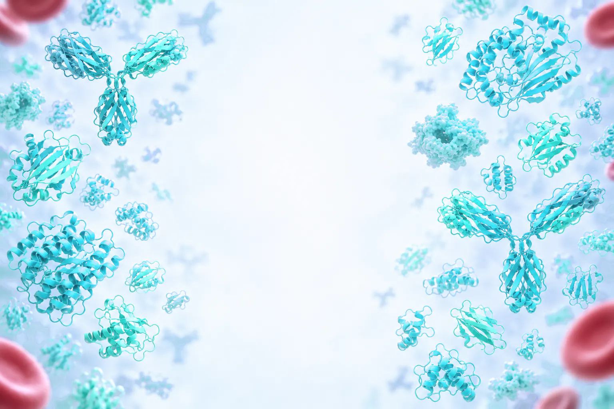
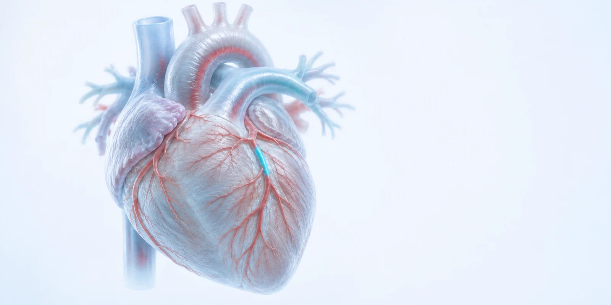

Анализ крови на 92 белка, по которым видно, как работают сосуды, почки, свёртывание крови и обмен веществ.
Уровни белков в крови меняются с возрастом, весом, давлением, курением и болезнями. Отчёт показывает, в каких системах есть отклонения и что стоит проверить в первую очередь. Исследование для взрослых, которые хотят дополнить обычный чекап; кровь сдают из вены, отчёт готов через 30 рабочих дней.

Отчёт приходит через 30 рабочих дней. В нём шесть частей — от главной цифры до списка всех белков. Сам по себе он диагноз не ставит: его обсуждают с терапевтом или кардиологом.
Насколько ваш белковый профиль отличается от профиля людей того же пола и возраста — в годах. Это оценка с погрешностью, а не прогноз продолжительности жизни.
Какие группы белков дали самый большой вклад в сдвиг: сосуды, обмен веществ, почки, свёртывание крови, иммунитет и воспаление, соединительная ткань.
Какие белки отклонились сильнее всего, в какую сторону и что это может означать.
Насколько рисунок ваших белков похож на тот, что по данным UK Biobank чаще встречался при каждом заболевании. Это место в ряду, а не диагноз и не вероятность заболеть.
Какие обычные анализы и консультации стоит обсудить со специалистом. Это не направление: решение принимает врач.
Отклонение каждого белка от группы сравнения — списком, начиная с самых заметных.
Главная цифра на условном примере
Отчёт сравнивает ваши белки с профилем людей того же пола и возраста и переводит отличие в годы. Здесь профиль на 7 лет «старше» паспорта. Это расчётная оценка, она не предсказывает продолжительность жизни.
Что проверить:
Исследование для взрослых, которые хотят дополнить обычный чекап. Особенно если что-то из этого про вас:
19,8млн
Болезни сердца и сосудов — главная причина смерти в мире. В 2022 году от них умерли 19,8 млн человек, около трети всех смертей. По данным ВОЗ, большинство таких болезней можно предотвратить, если вовремя заняться факторами риска.
ВОЗ, информационный бюллетень «Сердечно-сосудистые заболевания», 31.07.2025
Диспансеризация нужна и бесплатна. Априом Кардио её не заменяет, а дополняет: смотрит на белки, большинство из которых в обычных анализах не измеряют.
| Обычный чекап | Априом Кардио | |
|---|---|---|
| Что измеряют | Давление, холестерин, сахар, ЭКГ и другие привычные показатели | 92 белка плазмы, связанных с сосудами, почками, свёртыванием крови, воспалением и обменом веществ |
| Как читают результат | Каждый показатель сравнивают с его нормой | Для большинства белков привычной нормы нет. Важно, какие белки изменились вместе и в какую сторону |
| Что вы получаете | Есть ли отклонения и факторы риска сейчас | Расчётный возраст, вклад шести систем, 83 профиля заболеваний и план для разговора с врачом |
| Направление и цена | Диспансеризация бесплатна по полису ОМС | Направление не нужно, 9 800 ₽ |
Не вместо, а вместе. Давление, холестерин и сахар врач контролирует как обычно. С отчётом проще понять, о чём спросить на следующем приёме.
Пять шагов — от сосудов до разговора с врачом.

1Их состояние зависит от давления, веса, курения, питания и возраста.
Клетки сосудов, почек, печени и жировой ткани выделяют в кровь белки. По их количеству видно, как работают эти органы сейчас.
Кровь берут из вены, как для обычного анализа. Из неё отделяют плазму — для исследования нужна совсем капля.
Каждый белок узнают сразу два антитела, поэтому сигнал появляется только от нужного белка. Что означает каждый, известно из наблюдения за 54 тысячами людей.
Через 30 рабочих дней — расчётный возраст, вклад шести систем и план для разговора с врачом. Его обсуждают с терапевтом или кардиологом.
Как измеряют белки и откуда известно, что значат их изменения.
Sun B. B. et al. Nature, 2023; Argentieri M. A. et al. Nature Medicine, 2024
Каждый белок ловят два антитела с короткими ДНК-метками. Сигнал появляется, только если оба поймали одну и ту же молекулу. Тогда метки соединяются, и прибор считает, сколько таких пар получилось. Так из одной пробирки оценивают 92 белка сразу.
Результат — не концентрация в мг/л, а сравнение: выше или ниже уровень белка, чем в других образцах той же серии. Значение имеет не один белок, а то, какие белки изменились вместе.
В UK Biobank сравнили белки крови у тех, у кого потом развились болезни, и у тех, у кого нет. С этими связями отчёт и сопоставляет ваш профиль. Это статистика большой группы людей, а не прогноз для одного человека.
Если возраст по белкам был выше паспортного, у участников UK Biobank за годы наблюдения чаще развивались болезни сердца, почек, печени и лёгких, диабет. Это связь в большой группе, а не прогноз для конкретного человека. В этих работах измеряли почти 3 000 белков, в Априом Кардио — 92, связанных с сердцем, сосудами и обменом веществ.
Не ставит диагноз и не заменяет обычное обследование. Международные рекомендации кардиологов пока не включают белковые панели в обычную оценку риска: первый шаг — оценка у врача по возрасту, давлению, холестерину и курению. Простуда, обострение или новое лекарство меняют уровни белков, поэтому кровь сдают вне острых состояний.
Четыре шага. Как подготовиться, расскажем при записи.
в мессенджере, направление не нужно
короткая: рост, вес, лекарства
Москва, ул. Донская, 28
через 30 рабочих дней, обсудите его с врачом
Диспансеризация показывает, есть ли отклонения сейчас. Априом Кардио измеряет 92 белка, большинство из которых в обычных анализах не смотрят, и показывает, какие системы дали самый большой вклад в профиль. С отчётом проще обсудить с врачом, что проверить дальше.
Обычный биохимический анализ измеряет отдельные показатели с известными нормами: холестерин, глюкозу, креатинин. Здесь измеряют 92 белка, и для большинства из них привычной «нормы» нет. Значение имеет не один белок, а то, какие белки и в какую сторону изменились вместе.
Это расчётная оценка: какому возрасту по данным больших исследований соответствует ваш белковый профиль сердца, сосудов и обмена веществ. У неё есть погрешность, и это не прогноз продолжительности жизни. Если профиль «старше» на несколько лет, врач внимательнее посмотрит на системы, которые дали самый большой вклад. Если «моложе», обычная профилактика всё равно нужна.
Нет, это не диагноз. Показатель означает, что набор изменений ваших белков похож на набор, который чаще встречался у людей с этим заболеванием. Он дан перцентилем: значение 85 означает, что такой рисунок у вас выражен сильнее, чем у 85 из 100 человек в группе сравнения. Это место в ряду, а не вероятность заболеть. Подтвердить или исключить заболевание можно только стандартными методами, которые назначит врач.
Нет, исследование можно заказать самостоятельно. Но с результатом лучше прийти к терапевту или кардиологу: отчёт рассчитан на обсуждение с врачом и сам по себе диагноз не ставит.
Нет, ДНК не исследуют. Анализ показывает уровни белков в момент взятия крови. Они меняются, поэтому результат отражает текущее состояние, а не то, что заложено с рождения.
Эпигенетические часы оценивают возраст по химическим меткам на ДНК. Калькуляторы по биохимии считают его по нескольким рутинным показателям. Априом Кардио измеряет 92 белка, связанных с сосудами, почками, свёртыванием крови, воспалением и обменом веществ, и кроме оценки возраста показывает, какая из этих систем дала сдвиг.
Это решает врач по результату первого анализа. Повтор полезен, когда вы меняете образ жизни или начали лечение и хотите увидеть, как изменился профиль.
![Геномед]()